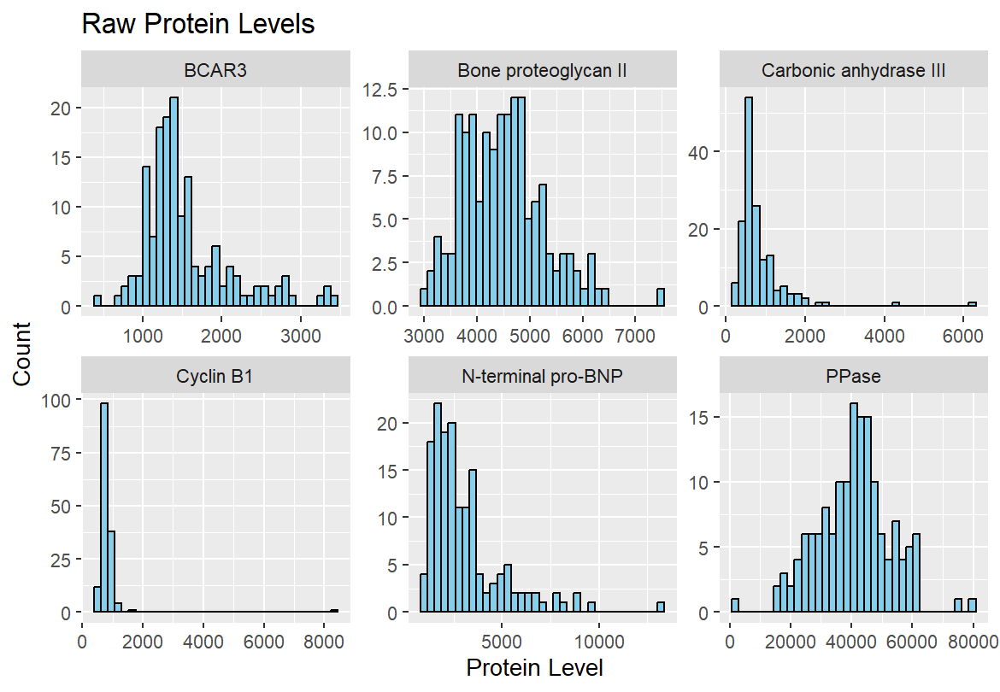
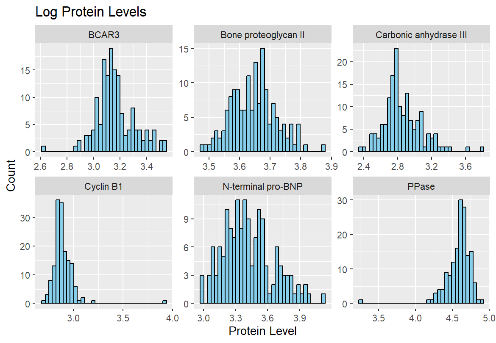
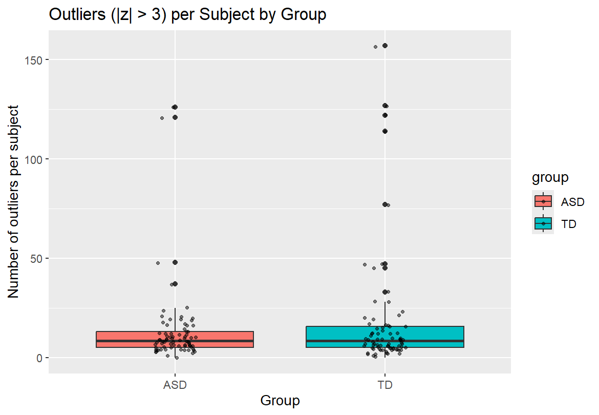
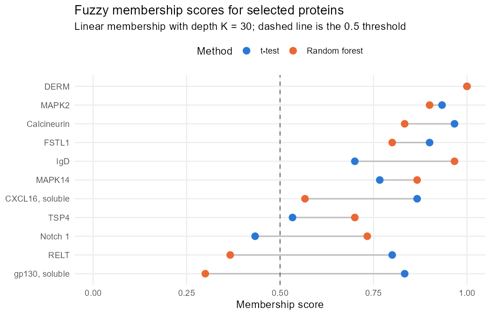
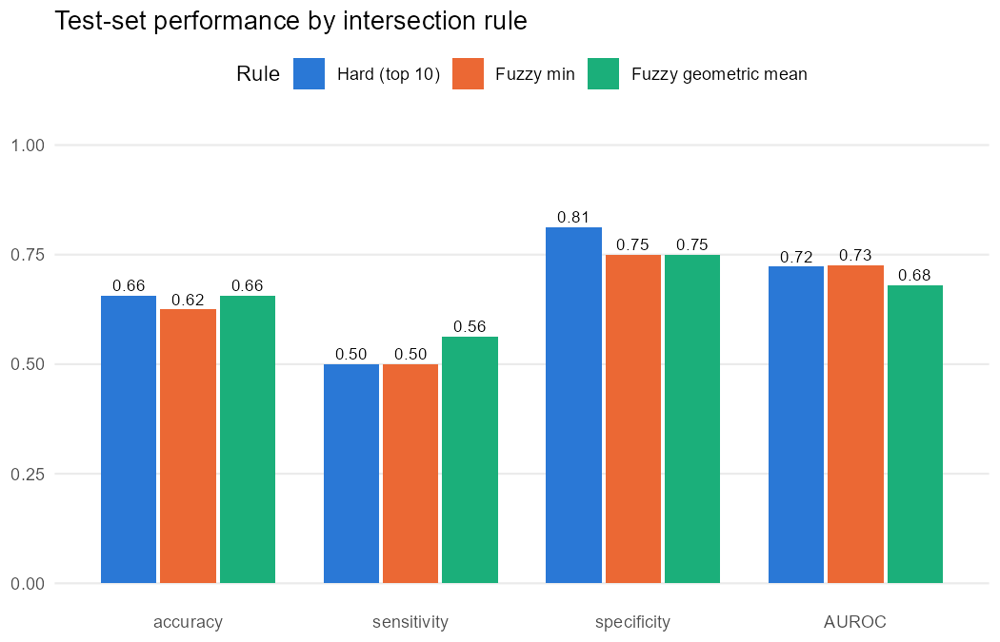
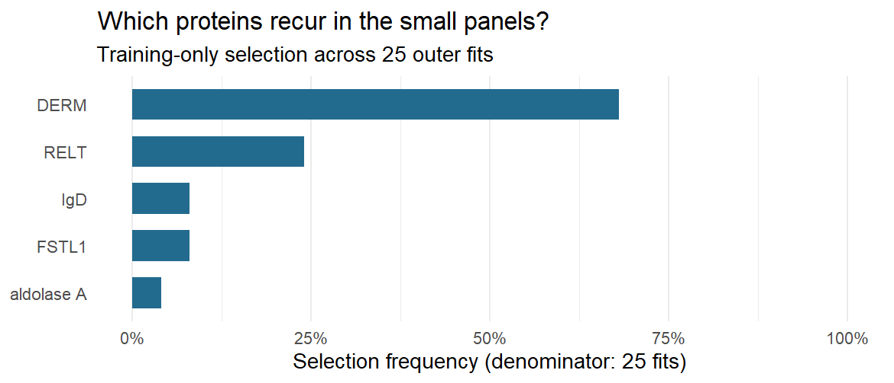
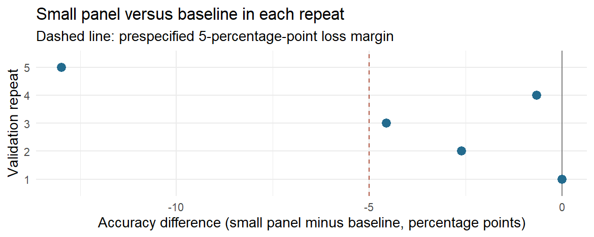

| group | n_subjects | mean_outliers | median_outliers | sd_outliers | max_outliers |
|---|---|---|---|---|---|
| ASD | 76 | 13.25 | 8.5 | 19.82 | 126 |
| TD | 78 | 17.59 | 8.5 | 29.25 | 157 |
Biomarkers of ASD
PSTAT 197A - Module 1 Biomarker Analysis
Abstract
We use serum protein measurements from 154 boys to explore how analysis choices affect the search for potential biomarkers of autism spectrum disorder (ASD). Log transformation reduced right skewness for several sampled proteins, although its effect varied across proteins. Outlying values were concentrated in particular subjects; TD subjects had a higher mean outlier count, while both groups had the same median. With preprocessing and protein selection restricted to training subjects, the Q3(a) classifier achieved 65.6% held-out accuracy. Selecting twenty rather than ten candidates per method changed the panel from 6 to 11 proteins; accuracy decreased by 3.1 percentage points. Relative to a hard intersection, accuracy decreased by 3.1 percentage points under fuzzy min and was unchanged under the geometric mean. In Q4, LASSO had the highest observed cross-validated accuracy, while a smaller panel reduced the number of proteins at some cost to prediction. These exploratory comparisons do not establish clinical validity.
Dataset
The publicly available data from Hewitson et al. (2021) contain serum measurements from 154 boys: 76 with ASD and 78 typically developing (TD). The SOMAScan assay measured 1,317 protein variables. The dataset also records group labels and Autism Diagnostic Observation Schedule (ADOS) scores, which are excluded from our classifiers.
Our analysis retains all 1,317 proteins, including the 192 excluded from the published study. The shared preprocessing script takes base-10 logarithms, centers and scales each protein, and clips standardized values to the range -3 to 3. We examine the effects of logging and clipping separately. In Q4 cross-validation, preprocessing parameters and protein selection are determined from training data before evaluating held-out subjects.
Summary of published analysis
Hewitson et al. (2021) combined protein rankings from random forests, group t-tests, and correlations with ADOS scores. Proteins shared by the top-ten lists formed a core panel, and additional candidates were considered for improving prediction. Logistic regression was used to classify ASD and TD subjects, with repeated training/test splits used to evaluate performance.
As described in the README, our simplified in-class procedure retains 192 variables excluded from the original study and combines t-test and random forest selections. It omits repeated forest fitting, forward selection in logistic regression, and repeated AUROC estimation. The in-class results are therefore not expected to match the original study. We use this implementation as the starting point for the team’s four questions.
Findings
Impact of preprocessing and outliers
Question 1: Log transformation
Methodology
To understand the effect of log-transforming the protein levels in biomarker-raw.csv, we took a sample of six proteins from the raw dataset and removed the non-protein columns. We then created two separate versions of the data (the raw numeric values and the base-10 log-transformed values) for comparison. For both versions we calculated the summary statistics (minimum, maximum, mean, median, and standard deviation) as well as Pearson’s second coefficient of skewness \(\frac{3(\mu - \tilde{x})}{\sigma}\). Lastly, we generated histograms for the raw and log-transformed values to visually compare the distributions.
Results
For the raw dataset, using Pearson’s second coefficient of skewness, where values greater than 0.5 indicate right skew and values less than -0.5 indicate left skew, three of the six proteins we sampled showed strong right skewness (Carbonic anhydrase III = 0.96, N-terminal pro-BNP = 0.94, BCAR3 = 0.84), while Cyclin B1 (0.43) fell just below the threshold, and PPase (-0.15) and Bone proteoglycan II (0.14) were essentially symmetric. The raw standard deviations ranged from 550 to 12,009. After log10 transformation, the three strongly-skewed proteins dropped greatly (N-terminal pro-BNP to 0.38, BCAR3 to 0.46), and the standard deviations compressed from 0.07 to 0.23 across all six proteins.


Interpretation
Log transformation compresses large measurements and can reduce right skewness, making relative differences easier to examine. Its effects varied across the six sampled proteins. PPase shifted from approximately symmetric to mildly left-skewed (coefficient -0.15 to -0.55), while Cyclin B1’s coefficient increased from 0.43 to 0.59. Carbonic anhydrase III remained right-skewed after logging (0.78). Thus, logging improved symmetry for some proteins but did not make every distribution symmetric. These descriptive results do not establish variance stabilization, and neither scaling nor clipping requires a log transformation.
Question 2: Outlier analysis
Methodology
To understand if specific subjects are outliers, we first removed trim() from the preprocessing code chunk and kept the log-transformation and scaling. We considered an outlier to be any z-value where \(|z| > 3\). We then reshaped the data to a long format and tabulated the number of outliers for each individual subject. Then we calculated the summary statistics (mean, median, standard deviation, and maximum) for the outlier counts by group. Lastly, we then generated a boxplot to compare the distributions visually.
Results
Across all 154 subjects, the median number of proteins that were outliers per subject was 8.5. Subject 154 in the TD group had 157 outlying proteins, and 6 subjects across both groups had more than 100. Only 2 subjects (one from each group) had zero outliers.
Interpretation
There were specific subjects that stood out as outliers. While the median subject had 8.5 outlying proteins, subject 154 in the TD group had 157 extreme values, and 6 subjects across both groups had 100 or more. In total, 77 of the 154 subjects had more than 8.5 outliers, and only 2 subjects (one from each group) had zero. If we look at the median of both groups, they both had exactly 8.5 for ASD and TD. However, looking at the mean, the most extreme cases are concentrated in the TD group. The mean number of outliers was 17.6 for TD compared to 13.25 for ASD, and the TD standard deviation was far larger (29.2 vs. 19.8). Overall, the median subject in both groups has the same number of outliers, but group TD has more extreme outliers.
| subject | group | num_z_outliers | num_z_outliers_perc |
|---|---|---|---|
| 154 | TD | 157 | 11.92 |
| 108 | TD | 127 | 9.64 |
| 9 | ASD | 126 | 9.57 |
| 121 | TD | 122 | 9.26 |
| 52 | ASD | 121 | 9.19 |
| 77 | TD | 114 | 8.66 |
| 147 | TD | 77 | 5.85 |
| 24 | ASD | 48 | 3.64 |
| 100 | TD | 47 | 3.57 |
| 150 | TD | 47 | 3.57 |

Methodological variations
Question 3(a): Training/Test Split and Protein Selection
Methodology
To reduce data leakage during feature selection, the dataset was divided into training and testing sets before starting analysis. Using initial_split() from the rsample package, 80% of the observations were allocated to the training set and 20% to the testing set, with stratification by group. Preprocessing means and standard deviations were estimated on training subjects only; both partitions were then transformed and clipped to [-3, 3] using those parameters. A random seed was set to preserve reproducibility. Protein selection was conducted exclusively on the training data using two approaches. First, statistical tests were used to identify the ten proteins with the strongest evidence of differences between the ASD and typically developing (TD) groups, with p-values adjusted using the Benjamini–Yekutieli procedure. Second, a random forest model was used to rank proteins by MeanDecreaseGini importance, and the ten highest-ranked proteins were selected. The intersection of these two sets was used to identify proteins supported by both selection methods.
A logistic regression model was then fitted using the selected proteins and training data. Model performance was evaluated on the held-out testing set.
Results
The selected panel and test-set metrics below are regenerated by scripts/analysis-main.R using training-only preprocessing and selection.
| Metric | Test-Set Result |
|---|---|
| Sensitivity | 0.5000 |
| Specificity | 0.8125 |
| Accuracy | 0.6562 |
| ROC AUC | 0.7227 |
Interpretation
The panel contained 6 proteins: DERM, Calcineurin, MAPK2, FSTL1, MAPK14, IgD. These results evaluate one held-out split and do not establish causal biomarkers or generalization to other populations. The historical in-class estimate in Q4 uses full-data selection and a different split, so it is a separate reference.
Question 3(b): Larger protein panels
Methodology
To examine whether considering more proteins improves prediction, we compared selecting the top ten and top twenty proteins from each method. We used the same 80/20 training/test split as Part (a), and protein selection was performed using only the training data. Proteins were ranked by Benjamini–Yekutieli-adjusted t-test p-values and random forest MeanDecreaseGini importance. Adjusted-p-value ties were broken by raw p-values, followed by protein names. The random forest was fitted once so both panel sizes used the same rankings.
For each comparison, only proteins appearing in both lists were retained. A logistic regression model was then fitted using these proteins and the training data. Both models were evaluated on the same testing set, with predicted probabilities of at least 0.5 classified as ASD.
Results
| top_k | panel_size | accuracy | sensitivity | specificity | AUROC |
|---|---|---|---|---|---|
| 10 | 6 | 0.656 | 0.500 | 0.812 | 0.723 |
| 20 | 11 | 0.625 | 0.562 | 0.688 | 0.699 |
| top_k | protein |
|---|---|
| 10 | DERM |
| 10 | Calcineurin |
| 10 | MAPK2 |
| 10 | FSTL1 |
| 10 | MAPK14 |
| 10 | IgD |
| 20 | DERM |
| 20 | Calcineurin |
| 20 | MAPK2 |
| 20 | FSTL1 |
| 20 | CXCL16, soluble |
| 20 | RELT |
| 20 | MAPK14 |
| 20 | IgD |
| 20 | TSP4 |
| 20 | Notch 1 |
| 20 | DKK3 |
Interpretation
Increasing selection from the top ten to the top twenty candidates per method changed the final panel from 6 to 11 proteins. Test accuracy decreased by 3.1 percentage points (from 65.6% to 62.5%), while AUROC decreased by 0.023 (from 0.723 to 0.699). These measures assess different aspects of prediction: accuracy uses a fixed threshold, while AUROC measures ranking across thresholds.
Both panels used the same test subjects and training-derived rankings. The comparison shows the observed tradeoff between panel size and prediction on this split; it does not establish which panel will perform better in a new population. Preprocessing parameters, protein selection, and model fitting all use training subjects only.
Question 3(c): Fuzzy intersection
Methodology
A hard intersection keeps a protein only if it is in the top ten of both the t-test and random forest rankings, so a protein ranked 11th by one method is dropped no matter how strongly the other method ranks it. To soften this rule, we used the same 80/20 training/test split as Q3(a) and kept the full ranking of all proteins from each method on the training data. Each rank \(r\) was converted to a membership score between 0 and 1,
\[ \mu(r) = \max\left(0,\ 1 - \frac{r - 1}{K}\right), \qquad K = 30, \]
so the top-ranked protein scores 1 and scores fall linearly to 0 after rank 30. We combined the two scores in two ways:
- Fuzzy min, \(\min(\mu_{t}, \mu_{RF})\), the standard fuzzy intersection: a protein is only as strong as its weaker ranking.
- Fuzzy geometric mean, \(\sqrt{\mu_{t} \cdot \mu_{RF}}\), which lets a strong ranking from one method partly make up for a weaker ranking from the other.
Proteins with a combined score of at least 0.5 formed the panel. For the min rule, this means both ranks must be 16 or better. For the geometric mean, it is equivalent to requiring a product of scores of at least 0.25. Each panel was used to fit a logistic regression on the training set and was evaluated on the held-out test set, with ASD as the positive class.
Results
| Rule | Proteins | Accuracy | Sensitivity | Specificity | AUROC |
|---|---|---|---|---|---|
| Hard (top 10) | 6 | 65.6% | 50.0% | 81.2% | 0.723 |
| Fuzzy min | 8 | 62.5% | 50.0% | 75.0% | 0.727 |
| Fuzzy geometric mean | 11 | 65.6% | 56.2% | 75.0% | 0.680 |
| Rule | Proteins |
|---|---|
| Hard (top 10) | DERM, Calcineurin, MAPK2, FSTL1, MAPK14, IgD |
| Fuzzy min | DERM, MAPK2, Calcineurin, FSTL1, MAPK14, IgD, CXCL16, soluble, TSP4 |
| Fuzzy geometric mean | DERM, MAPK2, Calcineurin, FSTL1, MAPK14, IgD, CXCL16, soluble, TSP4, Notch 1, RELT, gp130, soluble |
The hard intersection selected 6 proteins; fuzzy min selected 8, and the geometric mean selected 11. The tables and figures show their held-out performance and selected proteins.


Interpretation
Relative to the hard intersection, fuzzy min changed the panel from 6 to 8 proteins. Its accuracy decreased by 3.1 percentage points and AUROC increased by 0.004. The geometric mean selected 11 proteins; its accuracy was unchanged and AUROC decreased by 0.043. The geometric mean allows a strong ranking from one method to compensate partly for a weaker ranking from the other, whereas fuzzy min is limited by the weaker score.
These results describe sensitivity to the combination rule on one split. They do not establish that added proteins are noise or that one rule is generally superior. The test set contains only 32 subjects, so one misclassified subject changes accuracy by about 3.1 percentage points. The depth \(K = 30\) and threshold 0.5 were fixed rather than tuned.
The historical 83.9% in-class accuracy uses full-data preprocessing and selection and a different split. Differences from it cannot be attributed solely to leakage or to the intersection rule.
Improved classifier
Question 4: Alternative classifier
We asked whether a different classifier could improve prediction or use fewer proteins. The validated in-class baseline combines adjusted Welch t-tests and random forest selection with logistic regression. We compared it with LASSO, which shrinks coefficients and selects proteins, and logistic regression using a small panel of one to three highly ranked proteins. Inner five-fold cross-validation chooses the LASSO penalty and small-panel size, favoring simpler models when prediction errors are similar.
All three procedures use the same five repeats of stratified five-fold cross-validation, with preprocessing and selection performed within training folds. Accuracy, AUROC, sensitivity, and specificity are averaged over the repeats; protein counts summarize the 25 outer training fits. Paired accuracy differences give each subject equal weight within a repeat, then average the five repeats, matching the table below. The corrected analysis centers its approximate confidence intervals on these same differences; updated numerical intervals are not available in the saved summaries and are not reported here. ASD is the positive class, with predicted probabilities above 0.5 classified as ASD.
| Model | Accuracy | AUROC | Sensitivity | Specificity | Proteins |
|---|---|---|---|---|---|
| Historical in-class | 83.9% | 0.908 | 87.5% | 80.0% | 4 |
| Validated in-class procedure | 68.3% | 0.755 | 66.3% | 70.3% | 4.36 (1–6) |
| Validated LASSO procedure | 71.6% | 0.793 | 69.5% | 73.6% | 16.36 (8–30) |
| Validated small-panel procedure | 64.2% | 0.695 | 60.3% | 67.9% | 1.12 (1–2) |
The historical in-class model used DERM, RELT, FSTL1, and IgD and achieved 83.9% accuracy. Because preprocessing and protein selection used all subjects before its 80/20 split, this result is a separate reference and is not directly comparable with the cross-validated estimates.
In Table 5, LASSO had the highest observed validated accuracy (71.6%) and AUROC (0.793), using an average of 16.36 proteins. Its accuracy was 3.2 percentage points above the validated baseline (68.3%). The small-panel procedure achieved 64.2% accuracy using just 1 to 2 proteins per fit (mean 1.12). Its 4.2-point loss was within an exploratory five-percentage-point descriptive margin, although its AUROC and sensitivity were also lower. This margin was not a formal equivalence or non-inferiority test.
| Protein | Name | Coefficient | Selection frequency |
|---|---|---|---|
| DERM | Dermatopontin | -1.1170 | 68.0% |
The final small-panel fit selected DERM (dermatopontin; Table 6). The negative coefficient links higher standardized DERM levels with lower modeled odds of ASD. DERM was selected in 68.0% of outer training fits, the highest frequency shown in Figure 3. Selection still varied across partitions, and cross-validation evaluated the selection procedure rather than a fixed DERM-only panel.


The accuracy differences in Figure 4 vary across repeats. LASSO’s observed gain does not establish better population performance, and the small panel’s reduced size does not establish equivalent accuracy. These comparisons remain exploratory because they use many candidate proteins and repeatedly evaluate the same 154 subjects. The fixed DERM panel has not been independently validated.
Conclusion
Log transformation reduced skewness for several sampled proteins but did not improve symmetry uniformly. Outlier counts identified subjects with many extreme measurements; the TD group had a higher mean count despite an identical group median. These findings show why preprocessing choices deserve examination before classification.
With training-only preprocessing and selection, Q3(a) achieved 65.6% held-out accuracy. Increasing candidate-list size in Q3(b) changed accuracy from 65.6% to 62.5%. In Q3(c), hard intersection, fuzzy min, and geometric mean achieved 65.6%, 62.5%, and 65.6% accuracy, respectively. These comparisons quantify sensitivity to panel construction on the same split, but the small test set limits conclusions about general performance.
Among the Q4 classifiers, LASSO offered the strongest observed cross-validated prediction, while the small panel offered greater simplicity at some loss of accuracy. The historical in-class result used a different evaluation procedure and is a separate reference. The limited sample and variation in selected proteins mean that independent validation is needed before treating any panel as clinically useful.